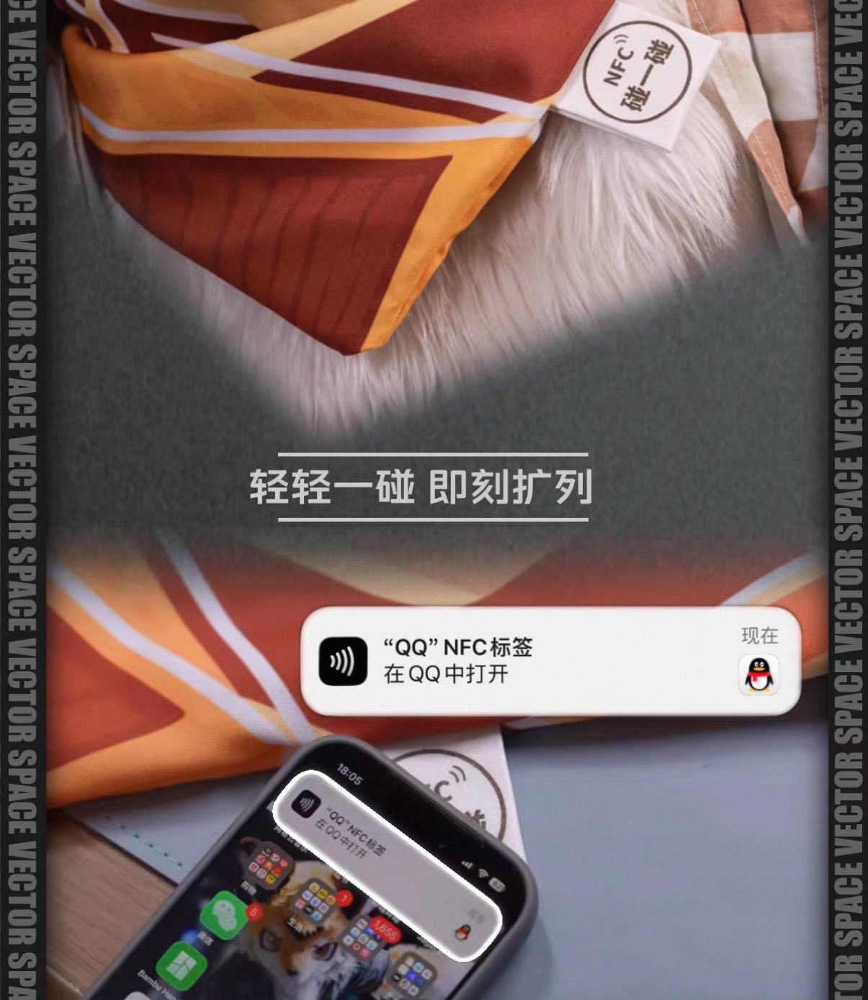

Sorcerer（抹茶重度依赖版）互fo寻回🍥🏳️⚧️
@Sorcerer198964
就是一条比较好看的三角巾啊！所以这是怎么和福瑞扯上联系的？
这三角巾确实挺好看的但是720一条和抢没区别，还逼逼赖赖那么多废话找理由，又不是什么高新技术奢侈品
我自己也有几条丝巾，材质是羊绒和真丝，你拿出来比比质量嘛
虽然我几乎从来没有用过因为感觉不太适合我

向量_Vector
@_vector_fox
我们上架了一款720元的三角巾
淘宝搜索店铺【向量空间】
这次是一个憋了好久的新品
评论区抽一个送一条
感谢大家对向量的喜爱 https://t.co/1lUrChzRfi